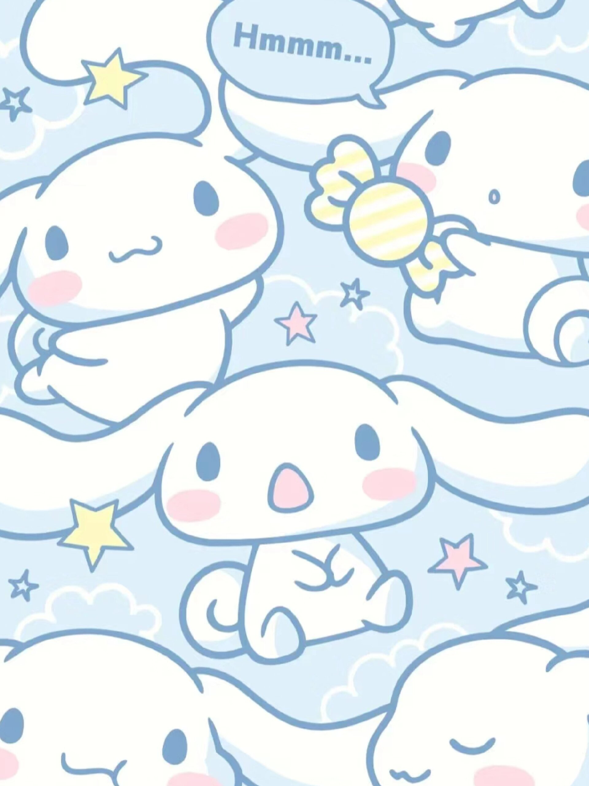
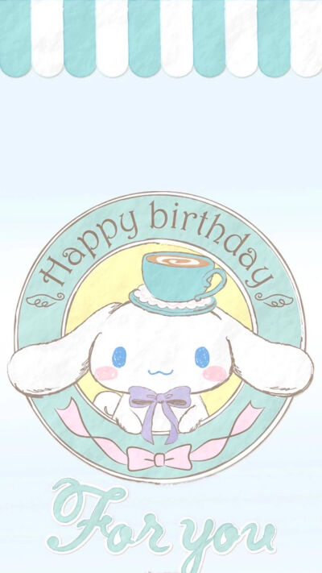
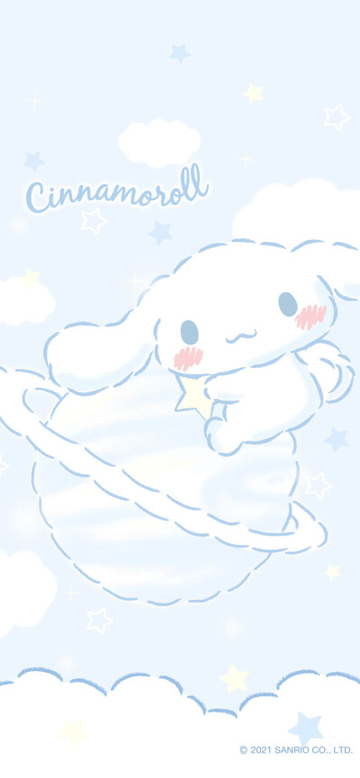
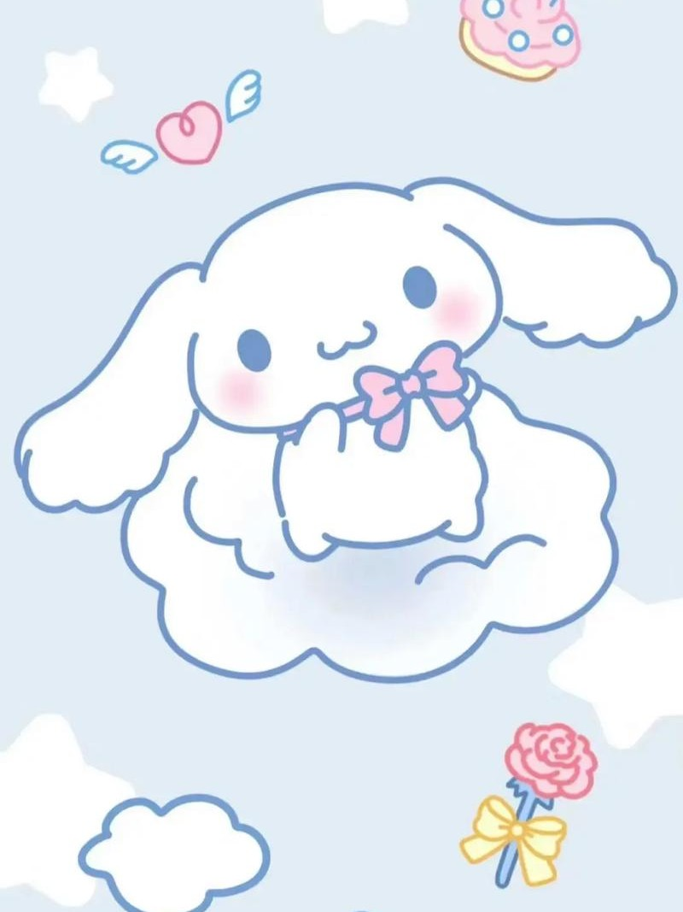
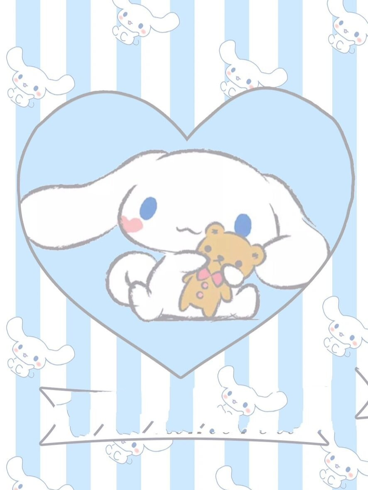
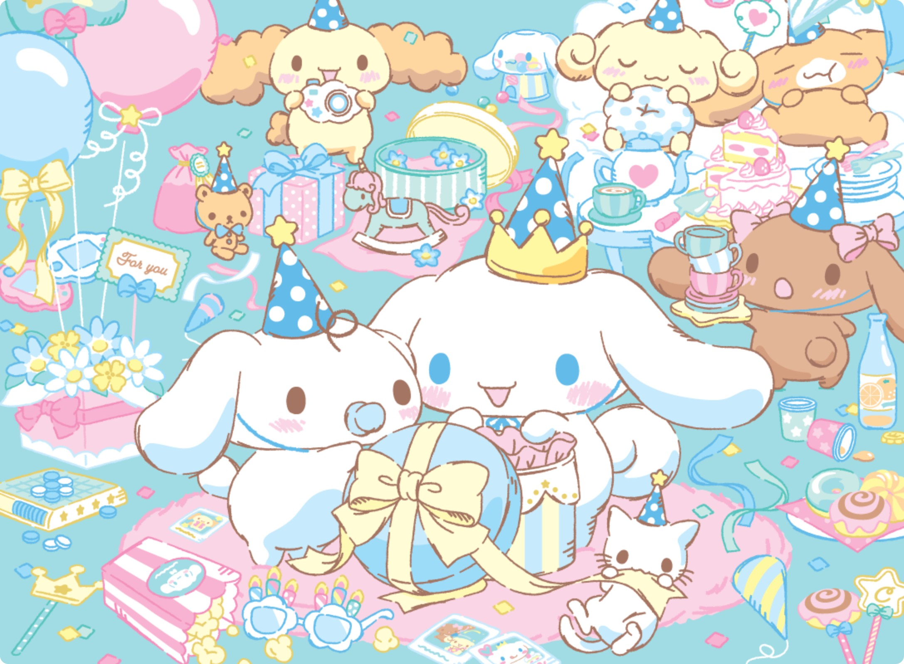
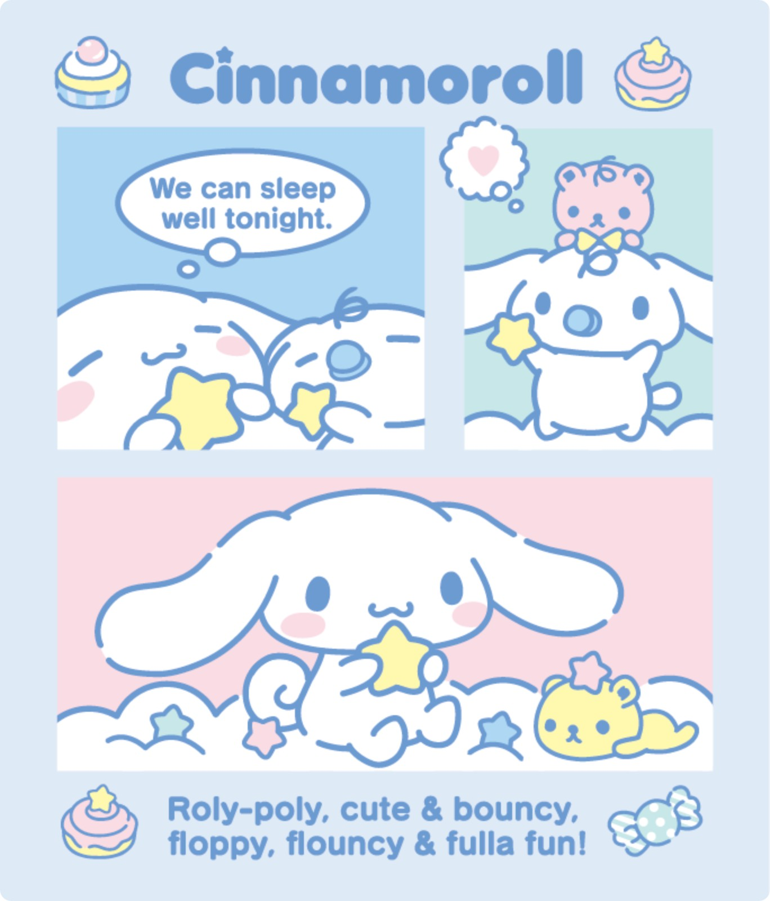
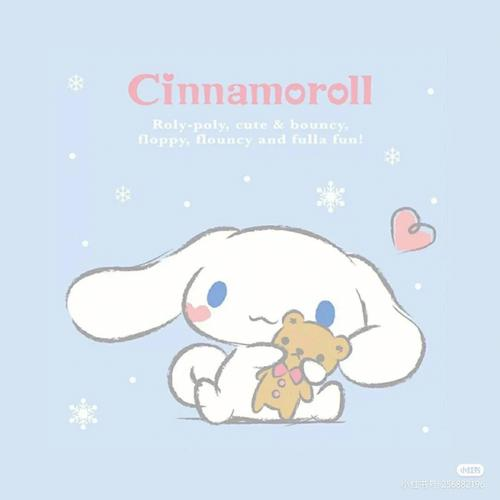
CINNAMOROLL
遥远天空的白云之上诞生了一位白色小狗男孩。有一天，在喜拿
咖啡馆工作的大姐姐发现了从天空中轻飘飘飞来的大耳狗，就此开始
与之一起生活。因为大耳狗卷曲的尾巴就像肉桂卷（Cinnamon Roll）
一样，大姐姐为他起名 “喜拿”（Cinnamoroll）。
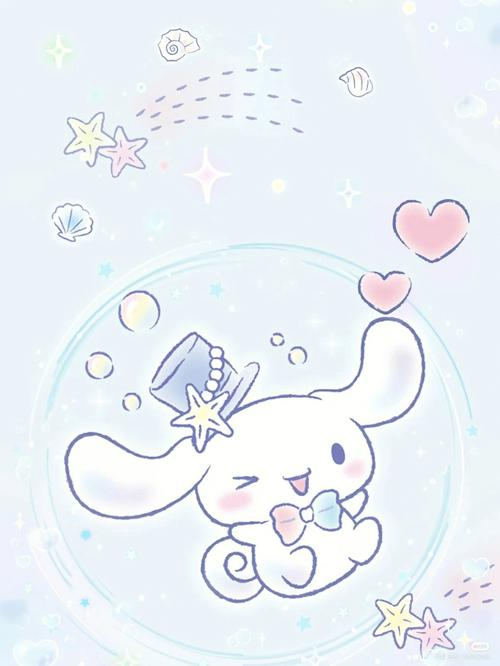
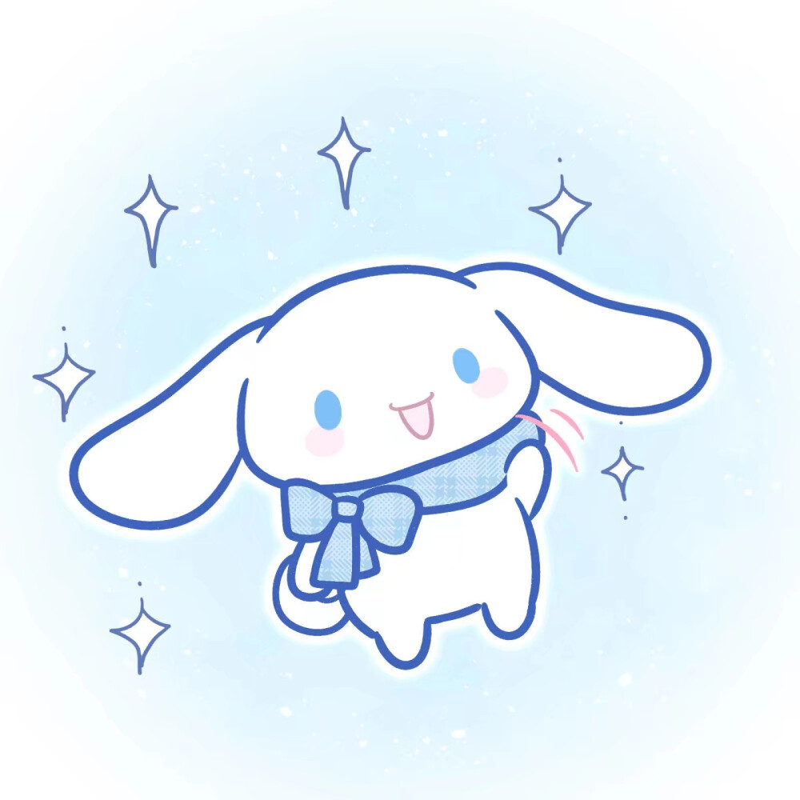
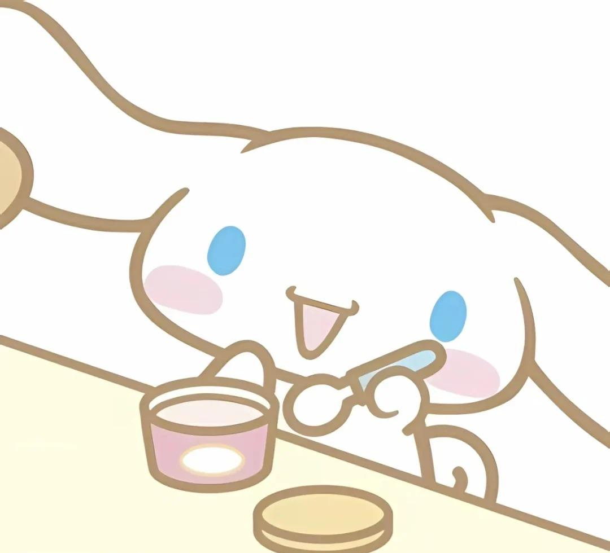
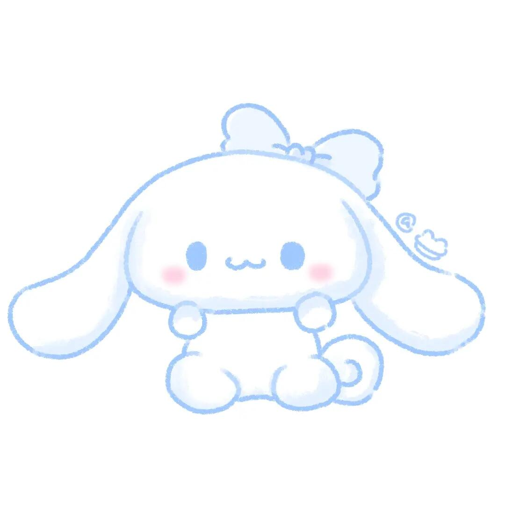
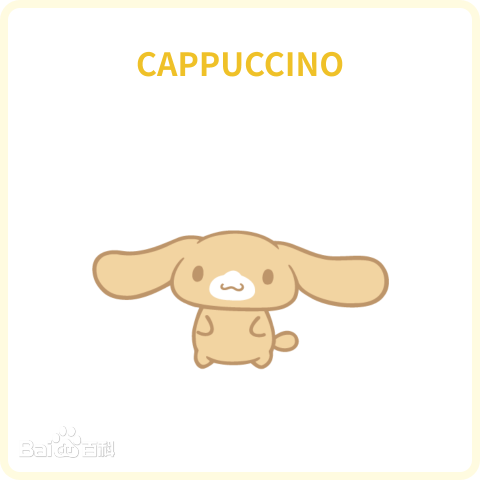
男
喜欢悠闲自在地在屋里午睡。是个好吃的小狗仔，也是大耳狗最好的朋友
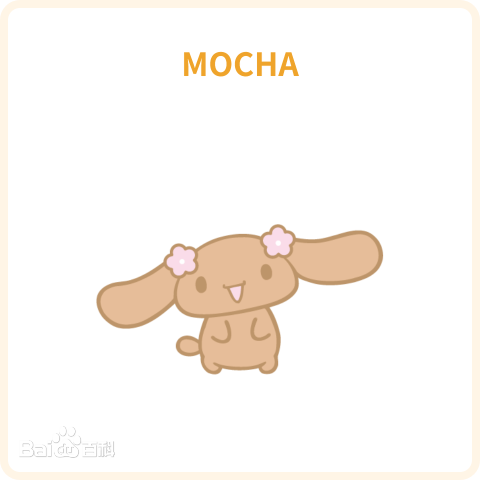
女
好打扮爱聊天，很温柔会照顾他人，在这群朋友内扮演大姐的角色。
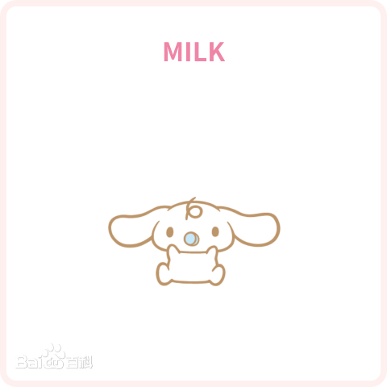
女
喜爱吸著奶嘴，一被拿掉奶嘴马上会哭。时常撒娇的她，非常喜爱大耳狗，希望自己有一天能像大耳狗那样地在天空飞。
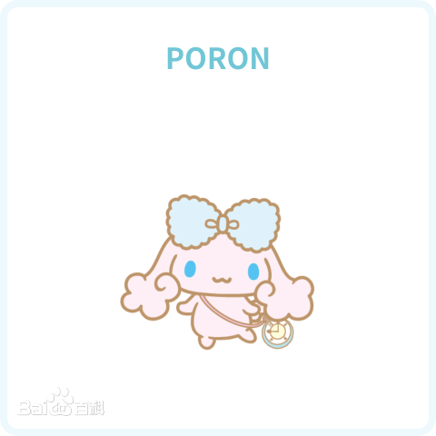
女
神秘小狗,像云一样柔软的耳朵和天蓝色的丝带是魅力点。有着和肉桂一样的蓝色眼睛。